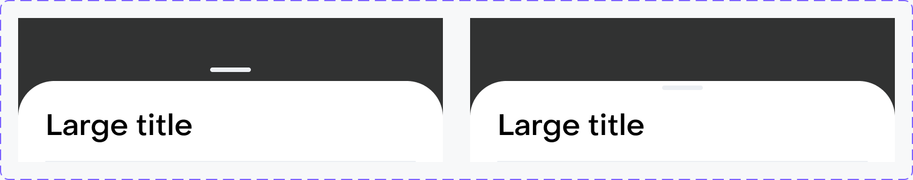
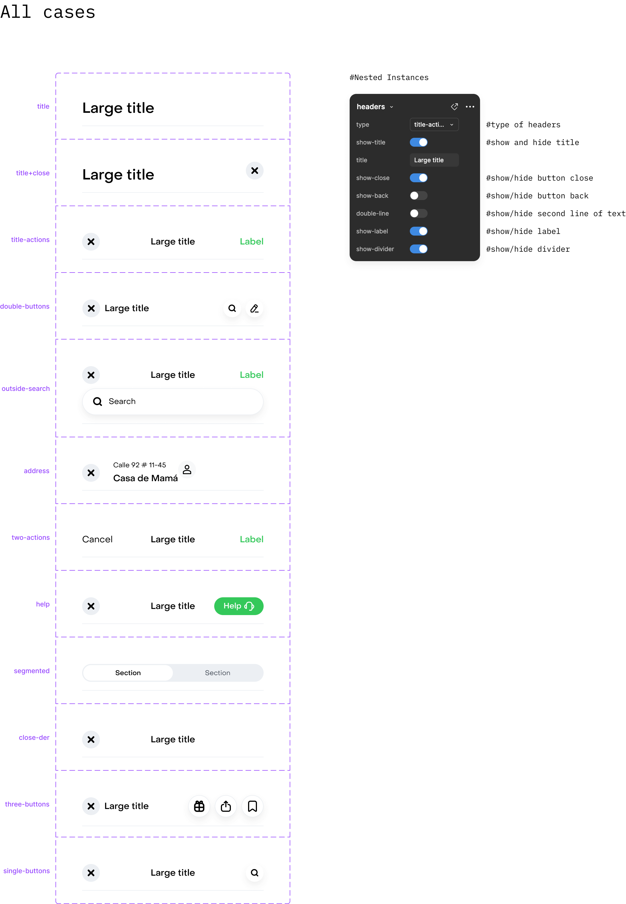
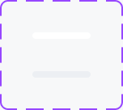
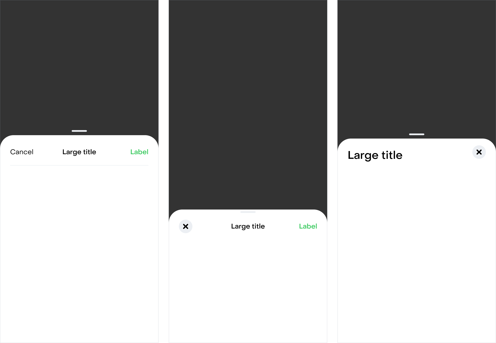
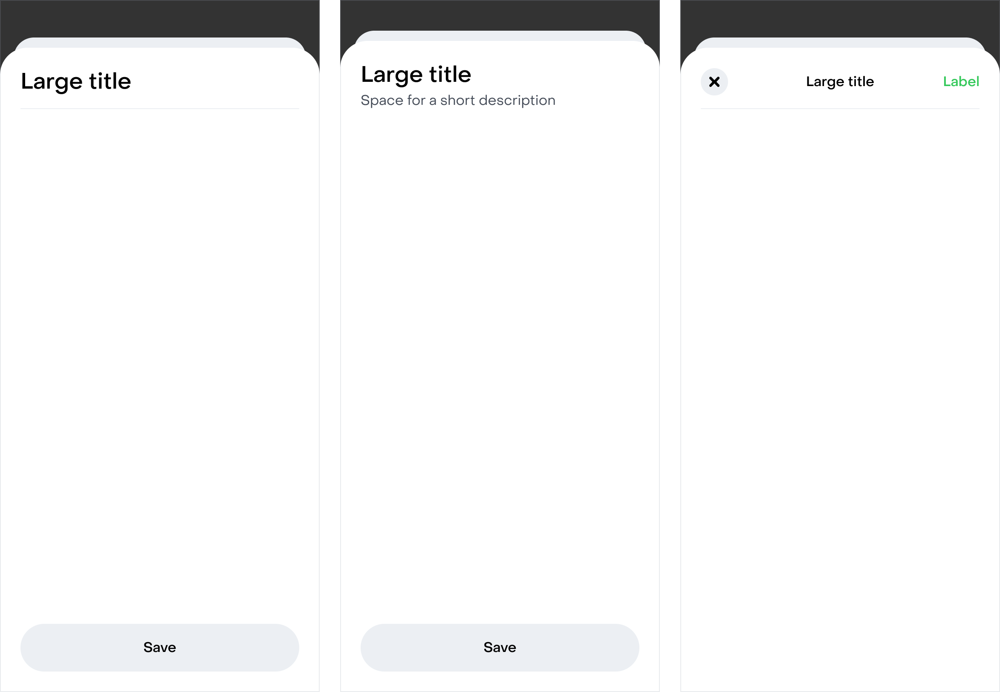
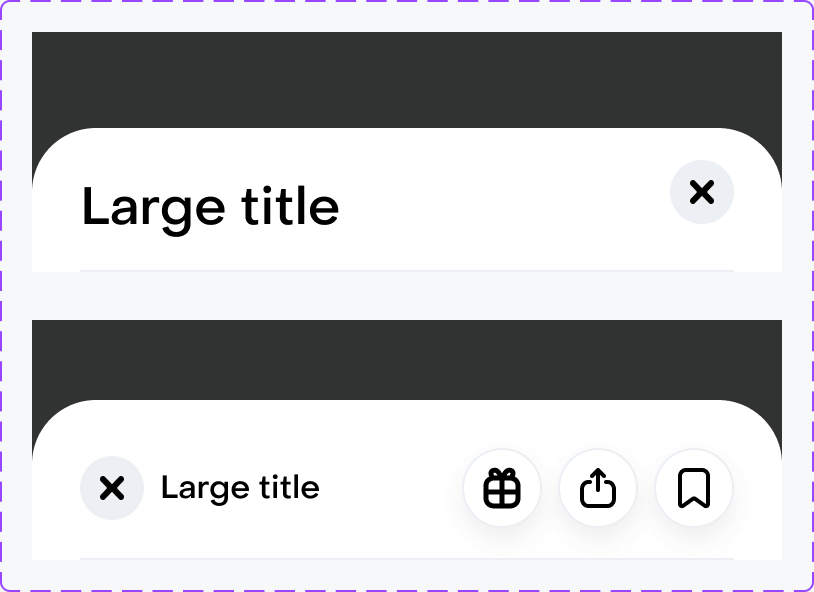
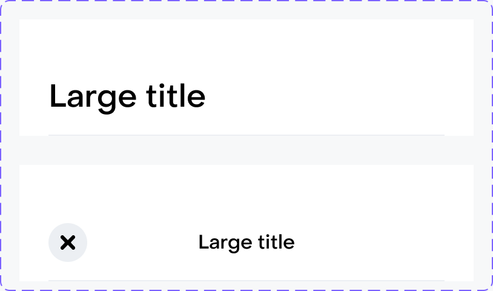

Modal sheets
Panel que sube desde abajo, sobre un fondo oscuro, para mostrar una tarea o información sin sacar a la persona de la pantalla en la que está.
Resumen
Familia de contenedores modales de la app. Todos comparten la misma cabecera (_headers) y se diferencian por cómo ocupan la pantalla: con handle, apilados o a pantalla completa. La altura la define el contenido.
Cuándo usarlo
- Tareas cortas que dependen de la pantalla de atrás: elegir dirección, método de pago, filtros u opciones de un producto.
- Información o confirmaciones que necesitan más espacio que un snackbar o un pop-up.
- Flujos de varios pasos dentro de un sheet: usa stacked-sheets para mostrar que hay un paso encima de otro.
- Contenido largo o con scroll propio (detalle de producto, formularios): usa full-screen-sheets o full-screen.
Cuándo no
- Para un aviso breve que no pide acción.Usa: Snackbars
- Para una decisión de sí o no que bloquea el flujo.Usa: Pop-up
- Para navegar entre secciones principales de la app.Usa: Navigation Bars / Tab Bars
Patrón: Modality. Cuándo usar una sábana, una pantalla parcial o una pantalla completa, buenas prácticas y el motion de entrada y salida (0,20s, scrim de 0% a 80%).
Anatomía

| # | Elemento | Notas |
|---|---|---|
| 1 | scrim | Fondo oscuro que cubre la pantalla de atrás (surface/overlay). Tocarlo cierra el sheet. |
| 2 | _grabber | Handle de 36×4. Externo (sobre el scrim) o interno (dentro del sheet): son intercambiables. |
| 3 | header | Contenedor del sheet: fondo background/on-top y esquinas superiores redondeadas (radius/xxl, 32). |
| 4 | _headers | Cabecera con título, botones de cerrar o volver, label y divisor. 16 tipos. |
| 5 | _status-bars | Barra de estado del sistema, opcional (status-bar). |
Átomos
Los 4 sheets se alimentan de los mismos átomos. Van como nested instances (instancias expuestas): desde el sheet eliges el tipo de cabecera o de handle sin que el componente necesite una variante por cada combinación. Así 4 sheets × 16 cabeceras no se vuelven 64 variantes en Figma.
_headers · cabecera
Cabecera de todos los sheets. Desde la instancia expuesta eliges type (16 tipos) y prendes o apagas título, cerrar, volver, segunda línea, label y divisor.

| Componente | Valor por defecto | Notas |
|---|---|---|
handle-sheets | type=title | Cualquier tipo de cabecera. |
stacked-sheets | type=title | Cualquier tipo de cabecera. |
full-screen-sheets large-title | type=title+close | — |
full-screen-sheets product-detail-page | type=three-buttons | Acciones de compartir y guardar. |
full-screen close-top | type=close-label | — |
full-screen fixed-header | type=title | Cabecera fija al hacer scroll. |
_grabber · handle
Handle de 36×4 para indicar que el sheet se puede arrastrar. inner=false va sobre el scrim (background/standard); inner=true va dentro del sheet (background/weak).

| Componente | Valor por defecto | Notas |
|---|---|---|
handle-sheets | inner=true | Lo usan las dos variantes (inner-handle=false y true). |
Ejemplos
01Handle sheets

| Prop | Valor | Notas |
|---|---|---|
handle | externo · interno | El handle puede ir fuera o dentro del sheet; son intercambiables. |
_headers type | cancel-label · title-actions · title+close | La cabecera cambia según la tarea. |
altura | según contenido | La altura del sheet la define el contenido. |
02Stacked sheets

| Prop | Valor | Notas |
|---|---|---|
stacked-sheets | — | El sheet de atrás asoma arriba: hay un paso encima de otro. |
_headers type | title · title + double-line · title-actions | Con botón fijo abajo (Save) cuando hay una acción principal. |
03Full-screen sheets

| Prop | Valor | Notas |
|---|---|---|
type | large-title | Cabecera title+close. |
type | product-detail-page | Cabecera three-buttons (compartir, guardar). |
04Full screen

| Prop | Valor | Notas |
|---|---|---|
type | close-top | Cabecera close-label. |
type | fixed-header | Cabecera title fija al hacer scroll. |
Do / Don’t
Pendientes
Problemas encontrados al documentar. Se resuelven en Figma, no en esta página.
- mediaradius/xxl (32) viene de la colección local Tokens de mobile-library, no de semantics: en semantics solo existen card (24) y pill.
- mediaSpacing/4xxl, Spacing/xs y Spacing/s vienen de Primitives. Deberían ser tokens de semantics (escala spacing-* o tokens con intención).
- mediaEl botón cerrar mide 32×32, por debajo del área táctil mínima de 48×48.
- bajaEl sheet de atrás en stacked-sheets tiene radio 30 sin token; el sheet usa 32.
- bajahandle-sheets con inner-handle=false usa _grabber inner=true (background/weak), pensado para ir dentro del sheet. Sobre el scrim correspondería inner=false (background/standard). Por confirmar.
- bajaLa lámina de documentación de _headers usa nombres (title-actions, two-actions, close-der) que no coinciden con los valores de su propiedad type (close-label, cancel-label, single-buttons…).
Todavía no hay implementación en código documentada para este componente.
Accesibilidad
| Tema | Regla |
|---|---|
| Foco | Al abrir, el foco va al sheet (al título o al primer control) y no puede salir a la pantalla de atrás mientras esté abierto. Al cerrar, vuelve al elemento que lo abrió. |
| Cerrar | Siempre hay una forma explícita de cerrar además del gesto: botón cerrar, "Cancelar" o tocar el scrim. El handle no puede ser la única salida, porque arrastrar no es accesible para todas las personas. |
| Área táctil | El botón cerrar mide 32×32: necesita área táctil extendida a 48×48 aunque se vea más chico. |
| Nombre accesible | El botón cerrar y los botones de solo ícono de la cabecera llevan nombre que diga la acción ("Cerrar", "Compartir"), no el ícono. |
| Título | El título de la cabecera es el nombre del diálogo: el lector de pantalla debe anunciarlo al abrir. |
| Scrim | El scrim es decorativo para el lector de pantalla: no se anuncia, pero tocarlo cierra el sheet. |
API
| Prop | Valores | Default | Notas |
|---|---|---|---|
handle-sheets | inner-handle=false · inner-handle=true | inner-handle=false | Sheet con handle. inner-handle=true lo pone dentro del panel. |
show-handle | true · false | true | Muestra u oculta el handle en handle-sheets. |
status-bar | true · false | false | Muestra la barra de estado. Existe en handle-sheets, stacked-sheets y full-screen-sheets. |
stacked-sheets | — | — | Sheet con otro asomando detrás (frame back): indica un paso encima de otro. |
full-screen-sheets | type=large-title · type=product-detail-page | type=large-title | Sheet que llega casi al borde superior. large-title usa _headers title+close; product-detail-page usa three-buttons. |
full-screen | type=close-top · type=fixed-header | type=close-top | Pantalla completa sin scrim. close-top usa _headers close-label; fixed-header usa title. |
Cabecera · _headers
Átomo de cabecera, expuesto en todos los sheets (nested instance). Sus propiedades se editan desde la instancia del sheet.
| Prop | Valores | Default | Notas |
|---|---|---|---|
type | title · title+close · title+back · close-label · double-buttons · outside-search · address · cancel-label · help · segmented · three-buttons · single-buttons · skeleton · brand-title · success · image | title | 16 tipos de cabecera. |
title | texto | Large title | Título de la cabecera. |
show-title | true · false | true | — |
show-close | true · false | true | Botón de cerrar. |
show-back | true · false | false | Botón de volver. |
double-line | true · false | false | Segunda línea de texto bajo el título. |
show-label | true · false | true | Acción de texto a la derecha (ej. "Label"). |
show-divider | true · false | true | Línea divisoria bajo la cabecera. |
Handle · _grabber
| Prop | Valores | Default | Notas |
|---|---|---|---|
inner | true · false | false | false: sobre el scrim (background/standard). true: dentro del sheet (background/weak). |
Estructura
| Elemento | Propiedad | Valor | Token |
|---|---|---|---|
| scrim | Fondo | Overlay oscuro | surface/ |
| scrim | Espacio superior | 48 | Spacing/ |
| sheet | Fondo | — | background/ |
| sheet | Radio superior | 32 | radius/ |
| sheet | Gap interno | 4 | Spacing/ |
| _headers | Padding | 24 / 24 / 16 / 24 | spacing-24 horizontal/ spacing-16 |
| _headers | Título (title+close) | h3 Medium | h3/ |
| _headers | Título (double-buttons) | body Medium | body/ |
| _headers | Color del título | — | ink/ |
| close | Tamaño | 32×32 | Sin token |
| close | Fondo · radio | — | background/ radius/ |
| _grabber | Tamaño · radio | 36×4 · 2.5 | Sin token |
| stacked: frame back | Fondo · radio | 30 | background/ |
| full-screen | Fondo | — | background/ |
Dependencias
Lo que este componente necesita de otras librerías para existir.
| Pieza | Tipo | Librería | Para qué |
|---|---|---|---|
_headers | componente | mobile-library Rappi 8 | Cabecera de todos los sheets. |
_grabber | componente | mobile-library Rappi 8 | Handle de handle-sheets. |
flexible | componente | mobile-library Rappi 8 | Botones de solo ícono en las cabeceras con acciones (double-buttons, three-buttons). |
close | componente | mobile-library Rappi 8 | Botón de cerrar de la cabecera. |
divider | componente | mobile-library Rappi 8 | Línea bajo la cabecera. |
_status-bars | componente | mobile-library Rappi 8 | Barra de estado del sistema. |
Colors Typography Spacing | variables | semantics | Color, tipografía y espacios de la cabecera y el sheet. |
Íconos (cerrar, volver, acciones) | íconos | icons | Dentro de close y de los botones de la cabecera. |
Tokens
Todo en token semántico. Las etiquetas marcan lo que hay que revisar antes de dar el componente por cerrado.
| Token | Rol | Colección |
|---|---|---|
surface/ | Scrim detrás del sheet | semantics · Colors |
background/ | Fondo del sheet | semantics · Colors |
background/ | Fondo de full-screen · handle externo | semantics · Colors |
background/ | Botón cerrar · handle interno · sheet de atrás (stacked) | semantics · Colors |
ink/ | Título | semantics · Colors |
h3/ body/ | Estilos del título según el tipo de cabecera | semantics · Typography |
spacing-8 spacing-16 spacing-24 horizontal/ | Padding y gaps de la cabecera | semantics · Spacing |
radius/ | Botón cerrar | Tokens (mobile-library) |
radius/ | Esquinas superiores del sheet (32) | Tokens (mobile-library) |
Spacing/ Spacing/ Spacing/ | Espacio superior, gap y grilla | Primitives |
Fuente. Figma MCP: componentes, propiedades y variables enlazadas de la página modal-sheets (mobile-library Rappi 8) · Sección documentation (41940:14449): ejemplos y reglas de uso. Capturado el 2026-10-02. Se documenta la familia de sheets (handle, stacked, full-screen-sheets, full-screen) y sus átomos _headers y _grabber. modal-pdp vive en la misma página pero es un caso de producto: se documenta aparte.